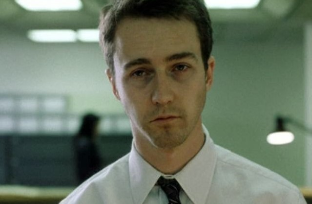

Edward Norton
El Narrador
Norton interpreta al protagonista, que en ningun momento de la pelicula dice su nombre. Es un empleado corporativo de unos 30 años que sufre de insomnio severo y una profunda sensacion de vacio. Su vida entera esta definida por lo que compra y lo que consume.
Para preparar el rol, Norton bajo de peso deliberadamente para que se notara el agotamiento fisico del personaje. Su actuacion es muy contenida, lo que funciona perfecto para contrastar con el personaje de Pitt.
Norton ya era conocido por Primal Fear (1996) y American History X (1998). Fight Club reafirmo que era uno de los mejores actores de su generacion.